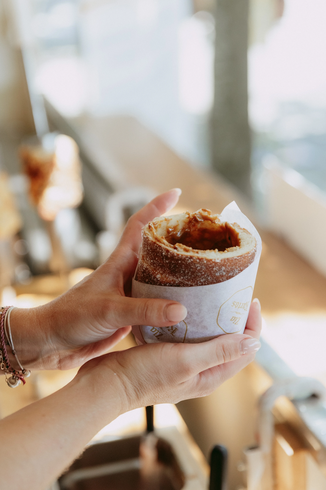

La vue
Le roulage de la pâte à la main, la broche qui tourne, la surface qui dore et caramélise — la préparation d'un kürtős est un spectacle en soi. Les visiteurs s'arrêtent, regardent, et restent naturellement.
L'univers de Zia Kürtös s'inspire d'une tradition hongroise millénaire, portée par la passion du fait-maison et le goût de la rencontre. Un stand, une broche, une odeur de sucre caramélisé — et des curieux qui s'arrêtent.

L'univers de Zia Kürtös naît d'une rencontre simple : un produit traditionnel hongrois, une broche, du sucre qui caramélise — et l'envie de partager cette expérience avec le public des festivals, marchés et événements en Suisse.
Le kürtős, ou gâteau cheminée, est l'une des pâtisseries les plus anciennes et les plus reconnues de Hongrie. Sa forme en spirale, sa cuisson lente, son odeur chaude et enveloppante en font un produit à part. Zia Kürtös fait découvrir cette spécialité hongroise en Suisse romande, sur les plus beaux événements du pays.
La marque s'inspire de cette tradition pour créer une expérience de street food à la fois authentique, artisanale et mémorable. Chaque kürtős est enroulé, cuit et garni devant les yeux des visiteurs, sur place, au fil des événements.
L'univers Zia KürtösUn produit simple, chaud et généreux, qui transforme une pause gourmande en petit voyage.

Zia Kürtös est né de la passion pour une spécialité hongroise authentique et de l'envie de la faire découvrir en Suisse. Derrière le stand, une équipe souriante, rapide et efficace, animée par l'amour du produit bien fait et le plaisir du contact direct avec le public.
Chaque kürtős est préparé à la main, cuit en direct sous les yeux des visiteurs — le roulage, la broche qui tourne, l'odeur du sucre caramélisé ou du Gruyère gratiné. Une belle énergie, une organisation au top et toujours le sourire !
Le stand Zia Kürtös se retrouve dans toute la Suisse romande, lors des festivals, marchés et événements qui font la richesse de la région — pour partager ce produit chaud, croustillant et généreux avec le plus grand nombre.
Le kürtőskalács est l'un des gâteaux les plus anciens de Hongrie et de Transylvanie. Sa forme cylindrique rappelle la cheminée — d'où son surnom de gâteau cheminée.
La pâte est enroulée à la main autour d'un cylindre en bois, puis cuite lentement à la broche. La surface est saupoudrée de sucre qui caramélise en une croûte dorée et craquante.
Aujourd'hui, le kürtős est l'une des spécialités de rue les plus appréciées en Europe centrale — et Zia Kürtös fait partie des rares acteurs à la faire découvrir en Suisse romande.
Le stand Zia Kürtös est présent dans toute la Suisse romande, lors des festivals, marchés de Noël et événements qui rythment les saisons.
La Suisse romande offre un terrain idéal pour cette spécialité : ses marchés de Noël, ses food festivals et ses événements culturels permettent à Zia Kürtös de rencontrer un public curieux, ouvert et gourmand.
Retrouvez les prochaines dates sur la page Événements ou en suivant Zia Kürtös sur les réseaux sociaux.
Le kürtős est un produit qui se vit avant même d'être goûté. La vue, l'odorat, l'ambiance — tout attire naturellement les curieux.
Le roulage de la pâte à la main, la broche qui tourne, la surface qui dore et caramélise — la préparation d'un kürtős est un spectacle en soi. Les visiteurs s'arrêtent, regardent, et restent naturellement.
Le sucre caramélisé et le Gruyère gratiné diffusent naturellement autour du stand. Une odeur chaude et gourmande qui attire les curieux avant même qu'ils aient vu le kürtős.
Croustillant dehors, moelleux dedans — chaque kürtős offre une texture unique et une saveur choisie. Un produit simple, sincère et généreux qui marque les esprits.
Un stand pensé pour s'intégrer à chaque événement, accompagné d'une équipe souriante, rapide et efficace. Une belle énergie, une organisation au top et toujours le sourire !
Chaque kürtős est préparé à la main, cuit en direct et servi chaud. Pas de production industrielle, pas de réchauffage. Juste un produit artisanal, fait sur place.
Le kürtős est photogénique, mémorable et visuellement fort. Les visiteurs partagent, se souviennent, reviennent. Un stand qui crée des souvenirs est un stand qui fait revenir.
Un stand gourmand qui se déplace, c'est aussi une promesse : un produit honnête, une équipe disponible, et une expérience qui vaut le détour.
Chaque kürtős est enroulé à la main, cuit à la broche et servi chaud. Aucune concession sur la qualité du fait-maison.
Le kürtős existe depuis des siècles. Zia Kürtös respecte cette tradition en la portant sur les événements contemporains de Suisse romande.
Une organisation au top, une équipe souriante et efficace — pour que chaque événement soit une belle rencontre entre le public et le kürtős.
Que vous soyez amateur de kürtős ou organisateur d'événement, Zia Kürtös est là pour vous.